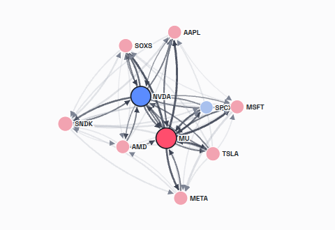

MarketRank · Fluxscape
Every trading day money leaves some stocks and moves into others. MarketRank models that as a Markov chain over stocks and ranks each one by the share of money that settles on it in the long run.
Stocks are the states of a Markov chain. The chance of moving from stock j to stock i is the share of j's outgoing dollars that goes to i. A stock's MarketRank is its stationary probability: where a dollar ends up after the flows have run for a long time.
This is the same construction as PageRank, with dollars in place of hyperlinks. A stock ranks high when it receives a large share of what its senders give away, and when those senders themselves rank high. The rank is a property of the whole flow network, not of a stock's own trading volume. The score is shown as π·N, so 1 means an average stock.
Trades are anonymous: the tape shows that a stock traded, not which stock the buyer sold to fund it. MarketRank therefore estimates the flows from public daily bars. Each stock's signed dollar pressure is paired, gravity-style, with the stocks that moved the other way, tilted toward the stocks it usually moves with. The result is a sparse transition matrix over 10,000 US stocks and ETFs, solved by damped power iteration in a deterministic parallel C++ engine.
The exact ranked table is always the reference. Around it, Fluxscape turns the chain into views you can read:

The practical question is whether MarketRank can improve real portfolio moves. We fixed the tests in advance and report them as they came out.
| Test | Result |
|---|---|
| Ten-year weekly walk-forward (2016–2026), after costs, against simply holding the portfolio | Not yet profitable: every configuration trailed buy-and-hold by 3–5% a year. One persistent effect, a short-term reversal in which today's hottest names do slightly worse, is real but small. |
| Estimated flows against observed institutional flows (SEC Form 13F, 39 quarters, 4,000–9,000 managers each) | The estimate gets roughly right which stocks send and receive money, and a little about when. It does not yet capture who pairs with whom. |
| How long do flow communities persist? | About as long as the flow window that defines them: half-life about a week on 20-day flows. |
The solver is sound. Its transition probabilities are only as good as the connectivity fed into it, and daily public bars carry size and a little timing, not pairing.
The transition-probability graph stays at the core. The current work learns the graph's connectivity, who funds whom, directly from market behaviour. A model learns the edges so that the chain built on them minimizes the error of next-week return forecasts. It is tested against graph-free and identity controls, under a protocol registered before any real data is used. Further routes are data that observe pairing more directly: ETF creation and redemption, signed intraday order flow, and 13F pairs mixed into the chain.
The method, engine, landscape pipeline, evaluation protocol and every result are in the paper: MarketRank: ranking stocks by the stationary probabilities of a Markov chain over estimated money flows (B. Kaan Karamete, Graph AI LLC).
MarketRank is a research preview. For access or collaboration, contact us.
MarketRank is research software. Nothing on this page is investment advice or a recommendation to buy or sell any security. Past and simulated results do not guarantee future performance.